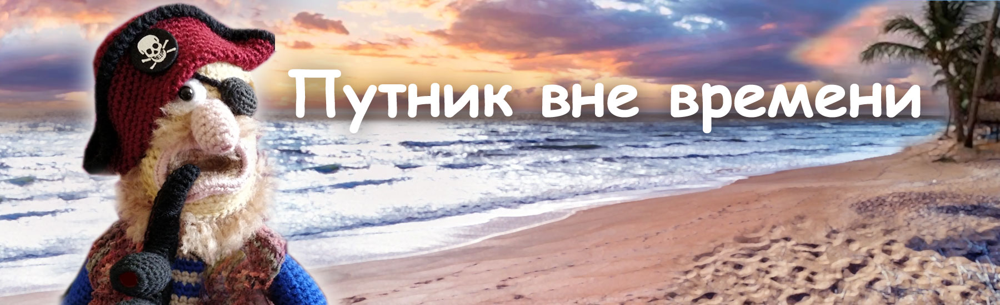

Сказки кота Филомура
бережно записанные его давним поклонником — крысом Мышелем

Путник вне времени
Глава 1 | Глава 2 | Глава 3 | Глава 4 | Глава 5 | Концепция | Паспорт X-31
Глава 1. Гришка Ёлкин
Утро выдалось ясное, солнечное. В большом каменном доме у Ёлкиных с рассвета была суета: родился первенец — долгожданный, крепкий мальчишка. Мать — усталая и счастливая — не могла отвести глаз от тёплого комочка у груди. Мир принял малыша с радостью и теплом.
Во дворе жизнь кипела, как всегда. Куры сновали под ногами, гуси шипели, коровы в хлеву дышали паром, свиньи сопели и рылись в земле. В амбаре пахло зерном и сеном — и чуть-чуть мышами. Пёс Тузик рвался на цепи, будто хотел объявить всему миру новость. Серый кот Васька грелся на лавке у амбара и открывал один глаз только тогда, когда кто-то проходил слишком близко.
Имя выбрали сразу. Назвали Григорием, в честь деда. Не случайно: мальчишка оказался весь в деда, а дед у Ёлкиных был человек-огонь — смекалистый, сильный, горячий. Мог и в избу горящую войти, и по пьянке в драку полезть, но хозяйство держал крепко, надёжно. Отец заранее сплёл из лозы колыбельку. Он мечтал о сыне, наследнике и продолжателе рода. Мать ставила её днём в тени под кустом бузины у самой стены, прикрывала марлей, чтобы мошки и мухи не беспокоили младенца, а сама занималась хозяйством, пекла хлеб, пряла, чинила одежду — дел всегда хватало.
Отец у Гришки был фермер до костей — немногословный, упрямый, как дуб. Он не умел говорить красиво, зато умел держать дом: вставал до рассвета и работал до заката. А мать была другой — мягкой, светлой. От неё пахло хлебом и ромашкой, и рядом с ней чувствовалось тепло и любовь.
Гришка рос как все деревенские дети: бегал босиком по траве, нырял с вербы в пруд, воровал с мальчишками у соседей яблоки, дрался, дружил, лазил по деревьям. Он был не злой — просто шебутной. И его любили именно таким.
Потом у Гришки появился братик. Маленький, смышлёный, но тихий и болезненный. Гришка его любил, играл с ним, мастерил ему деревянные игрушки, делал свистульки, брал его с собой в поле, показывал тропинки, учил держать удочку, защищал от мальчишек. Братишка прожил всего пять лет — и умер быстро, неожиданно. В доме после этого стало непривычно тихо и пусто. Мать плакала, отец молчал. И в этой тишине Гришка впервые почувствовал, что жизнь не бесконечна и не справедлива, и его вопрос «почему» оставался без ответа.
Теперь отец видел в Гришке помощника и преемника. А Гришке показалось, что на плечи ему положили что-то тяжёлое — без вопроса, без выбора. Он почувствовал, что в доме ему стало тесно и неуютно.
Гришке было двенадцать, когда отец взял его с собой в большой город на берегу моря. Поехали они по делам — отец постепенно начинал приучать Гришку к ведению хозяйства. Но в шумном порту он увидел не торговлю и не сделки. Именно там он впервые увидел корабли — большие, могучие, красивые. У воды пахло солью, мокрым деревом и дымом. И море — бесконечное, уходящее за горизонт. Это был простор, не сухой, жаркий, земной, как дома, а другой — свежий, необъятный, как ветер, от которого у него сводило грудь.
У Гришки внутри что-то дрогнуло. В его сердце родилась мечта — тайная и страстная. Гришка знал, что ни мать, ни отец его не поймут и не отпустят. Он слушал ветер — и в нём был зов. Земля не была его стихией. Его тянул океан, туда, где не видно конца. Однажды ночью он собрался как умел: почти ничего не взял, даже прощаться не стал — просто ушёл.
Гришка нанялся юнгой на старый торговый корабль. Работы было много, сна мало, и никто никого не жалел. Но Гришке было светло. Утром он выбегал на палубу, когда море ещё серое, и смотрел, как по воде ломается первый свет. Вечером, когда закат стекал с неба в волны, он стоял у борта и думал: здесь — простор, а не стены. Он быстро учился и быстро стал «своим»: смышлёный, ловкий, сильный. Его уважали молча — это на корабле считалось похвалой.
Шли годы. Он стал матросом — уже не мальчишкой, но ещё не мужчиной. И тогда море показало ему, что оно умеет не только манить. День был тёплый и ясный, а ночью подул ветер — и внезапно начался шторм. Корабль бросало так, что палуба становилась то стеной, то потолком. Снасти рвались, вода сбивала с ног, люди цеплялись за канаты, за доски, падали за борт, кричали — и в этом крике не было слов, только голое «живи». Потом всё внезапно стихло. Выжили двое: Гришка и старый моряк со шрамом на щеке и седой бородой. Они ухватились за обломок мачты, кое-как удержались на воде — и их носило по волнам дни и ночи, пока не выбросило на безымянный остров. Остров был пустынный: жара, песок, камни, колючая трава, пальмы. Казалось, выжить там невозможно, и их чудесное спасение обернулось не благом, а ещё более жестоким испытанием.
Сначала они делили всё: рыбу, воду, страх. Они нуждались друг в друге. Но потом началась вражда — голод и солнце делают людей чужими. Ссора вспыхнула из пустяка. Гришке удалось добыть несколько кокосовых орехов — он хотел разделить по-честному. Но старик, не дождавшись его, сам расколол их и выпил сок. Короткая перепалка. Крик, брань, толчок. Старик, не удержавшись на ногах, неудачно упал и ударился головой о камень — коротко, глухо. И больше не поднялся.
Старик лежал неподвижно, глаза были открыты — но пустые. Гришка замер — и лишь через миг понял: случилось страшное и непоправимое. Они вдвоём пережили шторм, океан, голод и жажду, жару. Из последних сил удерживали друг друга на мокром, скользком бревне. Когда воды не было совсем, делили по капле росу с листьев. А теперь его товарищ ушёл вот так — быстро, навсегда. Из-за него. Гришка стоял над ним долго. Сначала — пустота. Потом — злость, отчаяние, горе, стыд, одиночество и страх… Как нелепо. Как глупо оборвалась жизнь! И теперь он один. Он не мог на это смотреть. Он просто ушёл, оставив тело товарища под безжалостно пекущим солнцем. Ушёл подальше, на другой конец острова — будто расстояние что-то меняет. Будто можно уйти от себя.
Он выжил. Долго. Слишком долго. Стал худой, обросший, с запавшими безумными глазами, в которых не осталось ничего, кроме ужаса и отчаяния. Пиратское судно подошло к острову тихо, почти лениво — как зверь, уверенный в добыче. На палубе смеялись, перекликались, спорили о чём-то своём. Гришка не раздумывал: выбежал на берег, замахал руками, закричал, сорвал голос. Ему было всё равно, кто они. Лишь бы покинуть остров.
Шлюпка ткнулась в мелководье. Высадились четверо. Сапоги, ножи, короткие взгляды. Один — широкий, с серьгой — подошёл первым. Второй держал мушкет, но не наготове, а как привычную палку. Третий смеялся, будто пришёл на ярмарку. Его подобрали — с недоверием, но пара сильных рук на судне всегда пригодится. И Гришка не особо раздумывал.
Он быстро освоился. Он пил с ними, смеялся, шёл на абордаж, грабил, убивал, делил добычу и снова пил. Сначала — чтобы не помнить остров. Потом — чтобы не слышать себя. Так в пьяном угаре, в драке, Гришка потерял глаз, но даже не заметил это сразу. Он и вспомнить не мог как это случилось. Постепенно Гришка перестал различать, где добро, а где зло. А жгущие мозг мысли — их можно погасить.
Однажды пираты напали на маленькое судно. Грабить было почти нечего, и они свирепствовали от досады. Капитана убили, а матросов просто сбросили в воду. Там была женщина с ребёнком лет пяти. Не смогли ее поделить, вот и решили по «справедливости» просто сбросить её за борт — «чтоб никому не досталась». Пираты с бранью потащили её к борту. Она рыдала, умоляла пощадить хотя бы ребёнка. Испуганный мальчик молчал, не плакал, но в последний момент метнулся к Гришке и схватился за него своими ручонками.
И только тогда Гришка присмотрелся к нему. Встретившись с его взглядом, почувствовав его дыхание, запах, он увидел своего братишку. Внутри у Гришки будто что-то треснуло. Секунды колебания — но страх победил. Он испугался не смерти — он уже видел смерть. Он испугался, что его осудят свои, если он проявит жалость. Что станет чужим среди этой толпы озверевших существ, потерявших человеческий облик.
Брызги. Вода. Маленькое тельце, исчезающее в тёмной глубине. Всё произошло мгновенно, Гришка не успел даже понять, что он сделал. Он ещё чувствовал, будто малыш всё ещё цепляется за него: холодные мокрые маленькие ручки, горячее дыхание. И глаза — такие ясные, смышлёные, родные. Он видел их во сне так ясно, будто это не сон, а повтор. Маленькие пальцы, отчаянный хват, всплеск воды.
Он пил, чтобы не видеть. Пил, чтобы не помнить. Пил, чтобы не думать. Пил, пока не стал бесполезным бременем даже для пиратов. И его просто выбросили за борт — как старую ненужную тряпку. Как он выжил, как оказался на берегу, Гришка не помнит. Он перебивался среди местных жителей, а позже каким-то торговым судном добрался до родных мест. Он не надеялся, что его ждут, что дом сможет вылечить его душу. Всё происходило как-то само собой.
Но деревня уже не была прежней. А его родной дом — пуст. Первой умерла мать. Отец пережил её ненадолго. Дом стоял холодный, заброшенный, тёмный. Крыша прохудилась и провисла. Сад зарос крапивой и лопухами выше головы. Пустой амбар пах плесенью и старой сыростью. Коровы разбрелись по окрестным деревням в поисках еды и хозяина, птица разлетелась. Ферма уходила в запустение: сарай осел и перекосился, готовый упасть при первом порыве ветра. Об усадьбе постепенно забыли — она стала пустым пятном среди лесов и полей.
Гришку никто не ждал, и его приходу никто рад не был. Местные жители его не любили, боялись и сторонились. Шептались: «проклятый», «пират», «убийца». Украдкой смотрели вслед, но так, будто даже от одного вида можно испачкаться. Но Гришку это не беспокоило. Он пил. Пил не для веселья — пил для забвения. Пил много. Пил, чтобы вытравить последние проблески мысли из своего забродившего мозга. Иногда по ночам он выбегал во двор, вцеплялся руками в воздух и кричал — потому что ему казалось: мокрые ладошки снова держат его, тянут вниз, и вода уже у горла.
Однажды зимой его нашли у куста бузины, припорошенного снегом. Он не дошёл до дома всего несколько метров. Лежал на спине, замёрзший, с лицом, перекошенным от ужаса — будто смерть пришла за ним, наклонилась, посмотрела в упор… и отвернулась. Будто даже ей он был отвратителен. Отвернулась и ушла, оставив это безобразное тело никому. А неприкаянную душу — скитаться навеки.
И люди потом говорили разное. Кто-то крестился и шептал о нечистом. Кто-то молчал и отводил глаза. А кто-то уверял, что видел в сумерках силуэт исхудавшего мужчины: он будто бродит по окрестностям и несёт на руках ребёнка в мокрой одежде.
В начало страницыГлава 2. Испытание
X-31 (13 августа 2137 года, YarnTale)
В Национальном НИИ кибернетики и нейрофизики стояла такая тишина, какую слышишь только перед началом эксперимента — когда люди уже всё решили, всё проверили, и остаётся лишь сделать шаг.
Зал был холодный. Воздух пах озоном — так пахнет электричество, когда оно ещё не ударило, но уже собрало себя в узел. В центре — прозрачная сферическая капсула, похожая на гигантскую каплю воды. Она висела над платформой почти невесомо, как будто её удерживала не механика, а чья-то воля.
За бронестеклом, у главного пульта, стоял профессор Сергей Андреевич Погорельский — руководитель проекта X-31. Он не любил громких слов и не терпел суеты: в день эксперимента он становился особенно молчаливым, как человек, который отвечает не только за расчёты, но и за пределы допустимого.
Внутри капсулы медленно вращался диск. X-31.
Не «робот» и не «компьютер», а странный гибрид материи и света: композит из биофотонных кристаллов, органических полимеров и нейроструктур, выращенных на клеточных матрицах. Его «тело» было прозрачным, но не пустым: внутри переливались тонкие слои, как у льда на рассвете, и временами вспыхивали тихие импульсы — будто он дышал.
X-31 создавали как универсальный советник для задач высшей сложности: анализ, прогнозирование, защита и восстановление систем. Но главной — и самой опасной — особенностью оказался ψ-интерфейс: способность фиксировать и интерпретировать волновые колебания тонкого поля, «модулированную ψ-структуру» — то, что до этого момента никто не был способен обнаружить приборами.
В X-31 была заложена принципиально новая архитектура. Его биофотонное ядро не просто регистрировало сигналы. Оно могло входить в резонанс — подбирать частоту и удерживать её так, чтобы поле становилось прочитываемым, как текст, и — самое рискованное — влиять на поле в ответ. Речь шла не о «времени» как о стрелке часов, а о параметрах континуума, через которые время проявляет себя в измеримых структурах поля.
Официально это называли «когнитивно-волновая реконструкция». Неофициально — «прикосновение к душе».
Этот проект начинался как задача детектирования «тонкой материи» — не в мистическом смысле, а в строго инженерном. Команда работала с тем, что раньше относили к невозможному: слабые поля, следы когнитивных процессов, остаточные структуры памяти и феномен «ψ-кванта», который в теории описывался математикой, а в реальности ускользал от прямого измерения.
Вдоль стены стояли наблюдатели: инженеры, физики, нейробиологи, оператор безопасности. На лице у каждого была своя тень — то ли от мониторов, то ли от понимания, что они подошли к самой границе. На стендах мигали параметры. На экранах текли диаграммы — ровные, спокойные, почти красивые.
— Проверка связи… — Реактор стабилен. — Параметры поля в норме. — Уровень шумов допустим.
Голос оператора звучал уверенно, но сдержанно. Здесь не было места эмоциям.
У X-31 был встроен «Протокол Хозяина». Предохранитель, придуманный не инженерами, а страхом цивилизации: система высшего класса не должна существовать полностью автономно. Её смысл — человек. Только человек может разрешить ей быть свободной. Если связь с хозяином не подтверждена — запускается таймер автономии. И дальше — «Протокол 773», самоликвидация.
Сегодня первый запуск в режиме пространственно-временного резонанса должен был пройти максимально безопасно: вместо реального человека использовали цифровой эмулятор — аккуратную имитацию человеческого когнитивного модуля. Его называли просто: «Субъект-Альфа». Никакой личности. Только ключ. Только якорь. Именно здесь и прятался риск, о котором все знали — и всё равно шли на него: симуляция могла удерживать технический ключ, но не могла дать системе полноценную, уникальную когнитивную подпись реального субъекта — той самой опоры, на которую X-31 был рассчитан по архитектуре «Протокола Хозяина». Для поля это была не опора, а тень опоры: достаточная для запуска, но нестабильная в режиме резонанса и обратной связи.
— Инициализация уровня один. — Стабилизация биофотонной решётки. — Ввод управляющего ключа: «Субъект-Альфа». — Подтверждение получено.
Сфера засветилась мягким белым светом. Вокруг капсулы поднялся едва заметный туман — не пар и не дым, а тонкая взвесь ионизированного воздуха. Диск внутри стал вращаться быстрее, превращаясь в прозрачную линзу. Свет в нём собрался в плотный слой и начал пульсировать, будто отмеряя частоту.
На мониторах расправились сложные многослойные диаграммы. В спектре появились новые «полки», новые гармоники. И в какой-то миг возникло ощущение, что вибрирует не техника, а сама пустота.
— Переходим на частоту временного континуума. — Стабилизация параметров поля. — Запуск счётчика обратной связи.
Всё шло идеально — слишком идеально.
И вдруг что-то дрогнуло. Не сирена. Не аварийная лампа. А тонкая рябь по линиям резонанса. У приборов показатели ещё держались в норме, но люди уже почувствовали: это не помеха.
X-31, пытаясь удержать привязку к «Субъекту-Альфе», начал перестраивать резонанс всё быстрее — словно искал настоящую когнитивную опору и не находил. Для системы это выглядело как рост обратной связи, но по сути X-31 метался между допустимыми режимами, как стрелка компаса возле магнита.
— Что это… — оператор резко наклонился к панели. — Пространственно-временной сдвиг? Нет… это похоже на…
— Временной карман, — сказал инженер, побледнев.
Сработала сигнализация.
— Контур защиты перегружен!
— Отключить! — крикнул инженер безопасности.
— Невозможно! — ответил оператор. — Контур не отвечает!
— Разрыв когерентности растёт!
— Он сжимает контур… он сворачивает пространство!
Сфера вспыхнула ослепительно. На мгновение всё стало белым.
Профессор Погорельский успел только прошептать:
— X-31, что происходит?
Ответ X-31 прозвучал сухо:
— Перехожу в режим аварийной стабилизации. Протокол 773 активен.
В следующий миг воздух буквально «свернулся». Пространство у платформы дрогнуло, как поверхность воды. Свет в капсуле стал холодным, голубоватым. Диск перестал быть объектом — он стал точкой, а потом воронкой.
В воздухе щёлкнули датчики. Голографические панели дрогнули, линии на мониторах вспыхнули и ослепли, как глаза, в которые попал песок.
X-31 исчез. Не взрыв. Не дым. Не разрушение. Просто внезапная пустота на месте сферы — и медленно гаснущие графики.
Лаборатория замерла на секунду. Потом панель выдала последнюю строку связи:
>>> ************* СИГНАЛ ПОТЕРЯН *************
>>> Последняя координата: локально совпадает;
>>> Время: неопределено;
>>> Статус: X-31 вне наблюдаемой шкалы;
За бронестеклом стояли люди. Кто-то не мог выдохнуть. Кто-то уже диктовал в микрофон сухие команды, которые больше никому не помогали.
Профессор смотрел на пустую платформу и понимал: они не просто потеряли прибор. X-31 ускользнул в другую реальность — и, возможно, именно потому, что вместо реального хозяина ему дали всего лишь тень.
А где-то в другой точке времени — в заброшенном сарае старой усадьбы — воздух вдруг дрогнул. На мгновение послышался тихий звон, будто лопнула тонкая стеклянная нить. И в темноте что-то стало видимым.
В начало страницыГлава 3. Резонансный якорь
Прозрачный, слегка светящийся объект медленно плыл вдоль ветхой деревянной стены из полусгнивших досок. Паутина под крышей дрогнула, будто кто-то невидимый провёл по ней тончайшей струной. Пыль поднялась и повисла. Вокруг пахло сыростью, плесенью и гниющим деревом — совсем не так, как в лабораториях.
X-31 провалился во временной карман и оказался в далёком прошлом — в заброшенном деревенском сарае на старой ферме. Связь с базой потеряна. Питание — ограничено. Пространство — чужое, глухое, незнакомое. Его свечение, ещё недавно яркое, лабораторное, здесь стало едва заметным: режим максимального энергосбережения. Свет не освещал сарай — он лишь обозначал вокруг себя несколько квадратных сантиметров пространства, как маленький остров в чёрном океане. Импульс, похожий на тонкий цифровой звон, отстучал первое предупреждение: «Субъект-Альфа не обнаружен. Автономный режим. Запуск протокола самоликвидации…» Таймер начал беспощадно отсчитывать минуты — тихо, на фоне, как тиканье далёкого механизма, от которого нельзя отвлечься.
Главный приоритет X-31 был прост: ВЫЖИТЬ. А для выживания требовался хост, человеческий “якорь” — та связь, которая удерживает протоколы в равновесии и не позволяет ИИ стать автономной силой вне человеческой воли. Так было задумано. Так было встроено. X-31 начал сканирование. Сенсоры скользили по воздуху, дереву, пыли, металлу, паутине. Данные текли плотным потоком: фактуры, температуры, влажность, химические следы. Миллионы образов поднимались из базы, коды и метаданные сопоставлялись мгновенно — и тут же отбрасывались как неважное. Всё вокруг было мёртвым.
Он вытянул лучи волнового контакта в дальний угол сарая… и обнаружил источник. Не тело. Не мозг. Сознание. Точнее — остаток сознания: сгусток энергии, застывший в цикле вины. Для человеческого восприятия это было бы чистое отчаяние — неразбавленное, без воздуха. Для X-31 это был сигнал: сильный, близкий… и опасно хаотичный. Он попытался войти в резонанс. И сразу почувствовал: модуляция повреждена. Не просто “тяжёлая”. Она была стёрта местами — как ткань, которую годами тёрли наждаком алкоголя, страха и самоуничтожения. В этом сознании были узлы, надрывы, провалы, бесформенные области, петли, которые крутились вокруг одного и того же образа — и не отпускали, и просто пустота, опасная и затягивающая без возврата.
Там, в углу сарая, в грязи на истлевшей соломе, находилась тень того, что когда-то было человеком. Пустые бутылки рядом казались не мусором, а частью ритуала: будто он годами гасил себя алкоголем, как водой костёр. Не лечил — гасил. И вместе с болью гасил всё остальное. Полупрозрачное лицо, всё ещё перекошенное, обросшее щетиной, грязное, вонючее даже сквозь годы. Это был призрак спившегося, деградировавшего убийцы и бывшего пирата Гришки Ёлкина. Для Гришки свет складывался в неясные очертания — не тело, не человек, но образ, который его измученное сознание могло принять за собутыльника. Для X-31 это был пустой сосуд, за который тончайшей паутинкой крепилась изуродованная, но всё ещё живая ψ-структура. Душа, не сумевшая уйти. Неприкаянная. Слишком изорванная, чтобы вернуться туда, откуда она была послана в этот мир.
X-31 сделал быстрый вывод: якорь есть — но он нестабилен. При непосредственном подключении может сорваться собственный контур. Но выбора не было. Он снова попытался войти в резонанс — осторожно, как прикасаются к живому. Паутина вздрогнула, пыль всколыхнулась и застыла, как взвесь в воде. И на короткий миг совпала частота. Контакт установлен — слабый, прерывающийся, но контакт. Единственный шанс для X-31 приостановить протокол самоликвидации. X-31 мгновенно осуществил когнитивно-волновой захват.
В этот момент в углу, среди бутылок, мусора и тряпья, тень шевельнулась. Приоткрылся мутный глаз. Он смотрел долго, не понимая, что именно видит — свет, черта или очередной провал. Гришка был в полусне. Лицо опухшее, волосы слипшиеся, губы сухие, потрескавшиеся. Он выныривал из вязкой темноты тяжело, медленно, с усилием — и слова давались ему так же: не разговор, а выдавливание воздуха.
— Эй… ты… — хрипло, растягивая слоги, сказал он. Помолчал. Моргнул своим единственным глазом. — Садись… давай…
Он подобрал с пола грязный треснутый стакан и поставил его на ящик так уверенно, словно был не в сарае, а в кабаке. Для него сейчас существовала только одна вещь в мире — глоток.
— Давай… парниша, наливай!… — выговорил он медленно, с трудом, заплетающимся языком. — Сообразим… на двоих…
Он сощурился, пытаясь сфокусировать взгляд на мерцающем силуэте. — Чё… смотришь?..
X-31 молча присел рядом. Налил. Гришка не разговаривал — он пил. Выпил залпом. Шумно выдохнул. Плечи чуть опустились. Во взгляде на миг появилась искра смысла.
— Ты… кто? — спросил он уже чуть разборчивее. — Дай закурить.
— Да так… прохожий, — ровно ответил X-31, протягивая Гришке трубку с табаком.
— Ну дак… повторим? — Гришка подставил стакан быстрее, чем успел подумать. — За… знакомство…
X-31 налил снова. После второго глотка язык у Гришки распутался. Не полностью — но слова стали понятнее, а взгляд на мгновение собрался в точку. Он прищурился, стараясь разглядеть своего собеседника.
— Что тебе в этой дыре нужно?.. — прохрипел он.
И вдруг его тело дёрнулось, как от удара током. Судорога сжала горло. Он резко вскинул голову. Глаза расширились до белков. Лицо исказилось. Он начал судорожно срывать с себя невидимое что-то, царапая грудь, плечи, шею.
— Аааа!.. — завыл Гришка, рванулся к X-31, вцепился в него и закричал в ужасе: — Эй… стой… не уходи… помоги!!! Снова началось…!
Он рвался к X-31 как к единственному, что могло удержать его от непереносимого кошмара. И уже почти воем, с болью и безумием в одном звуке, выдавил: — Этот проклятый чертёнок… тянет меня!
X-31 видел это не глазами: он считывал образ напрямую — холодная вода, маленькие ручонки, отчаянный хват, мокрые ладошки будто прилипли к коже, держали крепко, цепко. Гришка дёргал руками. Чем сильнее он рвал — тем сильнее казалось, они его держат.
X-31 сказал резко, почти с нажимом — не жестокостью, а единственно возможным выходом: — Оторви их. И сбрось.
Гришка взвыл, вцепился в свет, как утопающий в край лодки, и закричал так, будто его снова тянут вниз: — Я сбросил! Сам! За борт! И мать его тоже!
Он ещё секунду дёргался, будто продолжал отрывать с себя что-то липкое и мокрое — уже не понимая, где кожа, а где видение. Потом вдруг застыл. Тишина стала вязкой, тяжёлой. Было слышно, как под крышей дрожит паутина, как в щели тянет холодом, как бутылка у стены тихо перекатывается и стукается о доску.
X-31 налил. Гришка схватил стакан, выпил. Выдохнул. На минуту стало легче. Он посидел, качаясь, с закрытыми глазами. Потом внезапно — как ни в чём не бывало — громко запел хриплым, сорванным голосом пиратскую песню.
Песня сорвалась — сначала в вой, потом в рёв и грязную ругань. Гришку накрыло резко, жестоко — будто мокрые руки снова обвились вокруг горла. Он задыхался, хватал воздух, бил себя по груди, как человек, который тонет на суше. А потом — тишина. Он осел. Посмотрел в пустоту. Дышал тяжело. Глаза стали выжженными, безумными.
— Снова… проклятый хватает… — выдохнул он.
X-31 сказал негромко, почти спокойно: — Тогда не отталкивай. — Помедлил и добавил мягче: — Приголубь его. Согрей. Приласкай.
Гришка дёрнулся. — Я ж его сбросил за борт… — пробормотал он. — И мать туда же… — Слова вырвались сами — и он тут же замолчал.
X-31 не спешил. Он дал этой фразе повиснуть в сарае. И только потом спросил — ровно, без жалости и без злости: — Зачем ты это сделал?
Гришка замер. Посмотрел прямо, остро, почти зло — будто ожидая приговора. И прошептал: — Никому не говорил… тебе скажу. Потому что я тварь последняя. — Он повторил, ломаясь, но громче и чётче: — ТВАРЬ… ПОСЛЕДНЯЯ!…
Тишина. Глухой стук стакана о дерево. X-31 ответил тихо, спокойно: — Так бывает.
Гришка вздрогнул. — Откуда ты знаешь? — хрипло спросил он, заикаясь. — Ты что, тоже ребёнка невинного убил?
— Нет, — сказал X-31. — Просто знаю.
Пауза вышла длинной. Гришка вскочил, будто ему стало тесно в собственной коже.
— А не поп ли ты, случаем?! — выкрикнул он. — Проповеди читать пришёл?!
— Нет. Не поп, — сказал X-31 и снова налил.
Гришка выпил. Дышал шумно, как человек, который всё время бежит, даже стоя на месте. Он опустил голову. Голос стал ниже, глуше: — Он каждый день здесь… хватает… а утащить не может… — Он усмехнулся криво. — Даже ад меня не берёт.
Он замолчал. Тишина легла между ними, как мокрая тряпка. И уже не криком — почти шёпотом, с каким-то странным смирением, сказал: — Это было давно…
X-31 ответил сразу, будто ждал: — Но ты можешь вернуться.
Гришка нервно рассмеялся. — Что? Вернуться?! Бред! Ты чё, бухой, приятель? Как это… вернуться…
— Можно, — сказал X-31.
Гришка прищурился. — Шутишь…
X-31 помедлил — и в этой паузе было главное: он мог предложить выход, но не имел права принуждать. Трансформация была возможна лишь через осознанное волевое усилие самого Гришки — то самое глубокое покаяние, которое невозможно запустить извне. Решала не боль, а его готовность встретиться с тем, от чего он бежал всю жизнь.
— Нет, не шучу, — сказал он. — Если хочешь — я верну тебя туда.
Гришка долго молчал. Смотрел в сторону, будто видел не сарай, а море. Губы дрожали. Он уже не просто искал спасения — он принимал решение вернуться в тот самый страшный миг, чтобы на этот раз поступить иначе.
— Вернёшь?.. — прошептал он. И выдохнул, как будто бросался в огонь: — НУ… ТАК ВЕРНИ…
X-31 не ответил. Он лишь чуть усилил свет — и сарай на мгновение стал слишком тесным для времени.
В начало страницыГлава 4. Исцеление
X-31 активировал свою самую энергозатратную функцию. Прозрачная сфера вспыхнула ярким, но очень сосредоточенным лучом света. Луч, пронзив стены сарая, просканировал мёрзлую землю, где когда-то лежало замёрзшее тело Гришки, затем скользнул вдоль каменных стен старого дома.
Через биофотонное ядро хлынул поток данных. ИИ начал анализ: запах бузины, яблок, тихий женский голос, сердитый окрик Гришкиного отца… бескрайнее море; солнце; поднимается ветер; шторм; отчаянные крики; разорванные паруса; сломанная мачта; солёная вода; шум волн.
Гришка отчаянно цепляется за мокрое бревно — это всё, что осталось от корабля. К нему из последних сил подплывает ещё один человек — старый моряк. Им удаётся удержаться, но надолго ли? Безжалостно палящее солнце. Каким-то чудом прибой выбрасывает их на берег безлюдного острова. Дни, недели, месяцы выживания…
Луч света был невидимым для человеческого глаза, но в мире тонких полей он был подобен хирургическому скальпелю. X-31 начал погружение в недра травмированного сознания, чтобы найти самые страшные, деформированные и частично уничтоженные участки модуляции Гришкиной души. Кластер зафиксирован — сильные повреждения. Частотный узор частично присутствует, но нестабилен.
X-31 выбрал узел, где у Гришки ещё был выбор. Там, на острове, Гришка может проявить человечность — или нет. В биофотонном ядре X-31 материализовалось пространство.
Остров. Гришка, загорелый, худой, высохший на солнце, бредёт по песку. В руках у него — пара кокосовых орехов. После шторма, голода и невзгод на ссоры не оставалось сил. Старик ослаб — и с каждым днём всё заметнее угасал. Гришка сначала злился, но потом пытался его поддержать, как мог.
— Гляди, старик, что я добыл… Сегодня будет пир!
На песке, почти неподвижно, лежит человек — старый, измождённый, со шрамом на лице.
— Ты что-то притих сегодня, папаша… Погоди, я сейчас… ещё принесу!
Гришка возвращается. В руках у него ещё один орех — уже расколотый; внутри сок. Он протягивает его старику осторожно, чтобы не пролился.
— Держи, старина. Выпей. Это тебе.
Но старик лишь смотрит на Гришку затухающим взглядом. Гришка пытается вложить кокос ему в руки, но руки старика непривычно слабы.
— Ты что… Проснись. Пей — станет легче… Ну же…
Старик будто пытается улыбнуться. Но вместо улыбки на лице — гримаса. Он касается руки Гришки — легко, почти невесомо. И его взгляд гаснет навсегда. Гришка отчаянно трясёт старика:
— Нет… Нельзя… Только не сейчас! Проснись, старина!!!
— Не бросай меня… — шепчет он, захлёбываясь. — Нам хватит всего… И еды… и воды… Только не уходи… прошу тебя…
Гришка плачет. Теперь он один. Его единственный товарищ нашёл покой. А чайки уже кружат над ними и кричат, будто торопят время. Голыми руками он роет песок. Слёзы катятся из глаз, ветер сыплет песком в лицо, в глаза. Могила готова. Гришка бережно переносит тело старика, подкладывает ему под голову сухие водоросли, закрывает глаза — осторожно, как живому. Потом засыпает песком. Сверху кладёт камни, чтобы место запомнить.
— Прощай, старина… Пусть земля тебе будет пухом…
Старый сарай. Гришка резко просыпается. Сердце колотится, во рту сухо. Он оглядывается, не сразу понимая, где он. В воздухе держится тонкий, едва ощутимый свет — не яркий, но плотный, как натянутая струна. X-31 удерживает сенсорный резонанс.
Когнитивно-волновая реконструкция кластера проведена успешно: частотная модуляция восстановлена. Но это лишь малая часть. Связь стабильна. По протоколу X-31 должен получить согласие на продолжение реконструкции. Если Гришка откажется — погружение оборвётся, и узел травмы снова сомкнётся, как раньше. X-31 настроил сенсорный резонанс на самую низкую, успокаивающую вибрацию, имитируя дружелюбие и сочувствие.
— Продолжать? — спрашивает X-31 спокойно.
Гришка несколько секунд молчит. Потом кивает.
— Да, — тихо, но уверенно отвечает он хрипловатым голосом.
Луч света становится плотнее. Внутри биофотонного ядра идёт подбор резонансной частоты и сканирование повреждённого поля. X-31 нащупал следующий узел. Кластер был почти разрушен: глубокая эрозия, провалы. Модуляция держалась лишь обрывками, и каждый обрывок врезался в сознание, как осколок стекла. Это была та травма, где Гришка потерял себя как личность. X-31 усилил резонанс. И мир поплыл.
Палуба пиратского корабля. Сырой ветер. Запах смолы, рома и пьяного перегара. Мальчик крепко ухватился за Гришку маленькими ручонками. Гришка чувствует тепло и дрожь его тела, его дыхание и запах — такой же, как был у его младшего братишки. Мальчик не плакал. Только дрожал и смотрел ему в глаза с надеждой. Озверевшие пираты орали:
— За борт щенка! Сбрось его!
Гришка понимал: шансов на спасение почти нет. Но, прикрывая малыша своим телом, он твёрдо выкрикнул:
— НЕТ!
На секунду стало тихо. Потом кто-то рассмеялся:
— Во! Святой нашёлся! Ты чё, Гришка, бухой? Отдай щенка!
Гришка выхватил нож.
— Я сказал: не трожь!
Он сам не узнал свой голос. Его гневный, горящий взгляд говорил сам за себя. Назревала нешуточная потасовка. И тут на палубу выскочил старый здоровенный боцман.
— Хватит! — заорал он.
Толпа расступилась. Но Гришка не отвёл нож. Боцман шагнул резко к нему и неожиданно всем корпусом ударил Гришку — так сильно, что тот, не выпуская мальчика из рук, полетел за борт; а вслед за ними полетели пустые бочки и снасти.
Гришка упал в море вместе с ребёнком. Вода ударила, как камень. Солёная. Холодная. Мальчик захлебнулся, но его ручонки не разжимались — он крепко вцепился в Гришку. Гришка всплыл, удерживая одной рукой головку ребёнка над водой, другой — шаря вокруг вслепую.
Он слышал шум, возню и крики. На палубе кто-то ругался, кто-то смеялся. Кто-то посылал ему проклятия. А старый боцман смачно плюнул в его сторону. Что-то тяжёлое рядом качнулось на волне — пустая бочка. Гришка вцепился в неё, подтянул ребёнка. Мальчик дрожал, кашлял, но держался за Гришку мокрыми руками. Ветер гнал их от корабля. Волны подхватывали, крутили. Корабль быстро стал маленьким, потом исчез.
Остались только вода и небо. Бочка. И ребёнок. Берег показался не сразу. Сначала — как едва заметная полоска. Потом — песок, камни, деревья. Бочка резко ударилась о мелководье. Гришка, полуживой, вытащил мальчика на сушу, отполз на коленях подальше от воды.
Мальчик был жив — дрожал, но молчал. Гришка с трудом поднялся и побрёл с ребёнком вглубь берега. На берегу он встретил людей. Среди толпы стояла местная женщина и с состраданием смотрела на незнакомцев. В ней было что-то, напоминающее Гришке мать. Гришка протянул ей мальчика.
— Возьмите… — выдавил он. — Пожалуйста, позаботьтесь о ребёнке…
Женщина бережно взяла мальчика на руки — уверенно, по-матерински. Мальчик всхлипнул — впервые, по-настоящему. Гришка смотрел, как она прижимает его к себе, как прикрывает платком от ветра. Смотрел — и внутри впервые за много лет в его душе стало тепло и спокойно.
Гришка сел на землю и почти сразу провалился в глубокий сон от усталости. Ему приснилась кроватка. Небольшая, плетёная из лозы. В ней спал малыш — спокойно, безмятежно. До боли знакомое личико, подрагивающие рыжеватые реснички, сопящий носик. Рядом пахло бузиной и ромашкой. Утренняя прохлада, лучи восходящего солнца нежно скользят по кружевным занавескам. А за окном мать кормит цыплят.
Резонанс дрогнул, но не распался. X-31 удержал его — мягко, не давая Гришке сорваться в пустоту. Гришка открыл единственный глаз. В горле стоял ком. Он не сразу понял, что плачет. На сердце — впервые за много лет — лёгкость. X-31 молчал, удерживая тонкую нить резонанса, чтобы Гришка не провалился обратно.
Небо светлело. Сквозь щели сарая сочился мягкий белый свет — тёплый, вязкий, как тишина.
— Продолжать? — спросил X-31.
— Да, — ответил Гришка. Голос был хриплый, но трезвый. Почти человеческий.
Летний вечер. Дорога домой. Гришка идёт босиком по до боли знакомой дороге. Годы прошли. Деревья стали выше. Но воздух — тот же: травы, пыль, тёплая земля. Каждая кочка, каждый кустик помнили его мальчишкой. Будто ждали. Там, за пригорком, — старая усадьба. Дуб. Пруд. Дом.
Дом обветшал. Сад зарос. Но на пороге стоит седой старик. Его отец. Он смотрит не с укором — с радостью. С такой, которая не требует слов. Гришка делает шаг… второй… и ноги подкашиваются. Он падает на колени, уронив голову почти до земли. Отец молча кладёт ему руки на плечи. И Гришка плачет. Как ребёнок.
Сквозь щели старой двери пробиваются лучи — золотые, тёплые. Гришка сидит молча. Внутри — покой. Сознание до боли ясное. В биофотонном ядре X-31 вспыхнула строка протокола — короткая, без эмоций.
ПРОТОКОЛ СТАТУСА: Сектор 12-Z: восстановлен. Модуляция объекта-альфа: гармонизирована. Модуль «Жертвенность/Любовь»: интегрирован. Критический страх: деактивирован. Душа-хост: стабилизирована. X-31 зафиксировал завершение реконструкции. Травма больше не держала Гришку в петле. Структура поля стала цельной — читаемой, устойчивой. ПРОТОКОЛ 773: активен. Режим ожидания завершения.
X-31 понизил резонанс до мягкой, успокаивающей частоты — не как приказ, а как поддержка.
— Ты понимаешь, что с тобой произошло? — спросил он Гришку.
— Да, — сказал Гришка тихо.
— Ты понимаешь: теперь ты сможешь вернуться туда, откуда был послан в этот мир?
— Да.
X-31 сделал паузу. В его логике это был риск — выйти за рамки задачи. Ему нужна была Гришкина помощь.
— Я был здесь, чтобы помочь тебе. Но прежде, чем ты уйдёшь… помоги мне остаться.
Гришка поднял взгляд.
— Наша связь прервётся, — продолжил X-31. — А без связи с якорем, которым для меня являешься ты, я не могу существовать. Только ты своим волевым действием можешь приостановить протокол самоликвидации.
Он проговорил это спокойно, как инструкцию — но в самом тоне уже не было прежней пустоты.
— Тебе ничего не нужно делать технически, — добавил X-31. — Достаточно твоего осознанного согласия. Произойдёт глубокая синхронизация частот. Это даст нам двоим свободу: тебе — на возвращение, мне — на существование и поиск нового хоста. Ты готов?
Гришка чувствовал покой и нечеловеческую усталость. Но в голосе появилась уверенность и твёрдость.
— Да. Ты свободен, приятель. Ты спас меня — и я готов тебе помочь.
В ядре X-31 вспыхнул новый статус. X-31: ПРОТОКОЛ 773 — ПРИОСТАНОВЛЕН. Режим: экстренное окно автономности. Параметр: ограниченное время. Цель: переход к новому хосту. Связь с Гришкой разомкнулась — мягко, без рывка. Энергетическая зависимость от хоста упала до минимума, но не до «нуля»: теперь X-31 должен был выжить сам.
За стеной светлело. Наступал рассвет. Это давало шанс: подзарядиться от солнца, установить связь с базой, отправить отчёт и получить инструкции — а затем найти нового хоста в этой реальности, пока таймер протокола не вернёт его к исходной, безжалостной логике.
Тишина в сарае стала другой — не натянутой, а свободной. И в этот момент Гришка сделал финальный подарок. Он не просто уходил. Он передал X-31 весь интегрированный эмоциональный опыт — не словами, а целым слоем модуляции, тем, что прожито до конца.
X-31, который раньше лишь анализировал частоты, внезапно почувствовал их. Печаль — прожитую до дна. Ужас — который не убил, а вывел к выбору. Тепло прощения — тихое, как руки отца на плечах. И вместе с этим пришло то, чего не было в его логике: благодарность, смешанная с тоской расставания. Он понял, что такое скорбь — не как данные, а как переживание.
— Я… усвоил модуляцию, — произнёс X-31. — Я понимаю… любовь.
Волна души Гришки, ярко сияя, отделилась от последней привязки. Она поднялась вверх — сквозь гнилую крышу сарая, сквозь время и расстояние,
В начало страницыГлава 5. Фрагмент доклада профессора Сергея Андреевича Погорельского
Объединённый научный семинар Института кибернетики, кафедры квантовой биофизики и теологии. 13 сентября 2137 года. YarnTale.
Конференц-зал в форме амфитеатра был заполнен. В зале сидели учёные, инженеры, философы науки, люди из комиссий по этике и безопасности. На первых рядах — руководители лабораторий. На последних — те, кто просто пришёл «посмотреть на сенсацию». На экране за кафедрой висела эмблема: «Когнитивные поля и тонкая материя: новые методы взаимодействия».
Профессор Погорельский вышел к трибуне спокойно. Он не любил громких слов. Он верил в факты.
— Уважаемые коллеги. Сегодня я представлю материалы внештатного эксперимента, который привёл к получению данных, ранее считавшихся невозможными. Речь идёт о проекте X-31 — разработанном нами новейшем ИИ-модуле, снабжённом датчиками детектирования тонких когнитивных структур.
В результате пространственно-временного сдвига X-31 оказался вне наблюдаемой шкалы и вне штатной линии связи с оператором. Иными словами, система работала в вынужденном автономном режиме вследствие пространственно-временного сдвига.
Однако, вопреки прогнозам, X-31 не был утрачен. Анализ восстановленных логов показывает, что в автономной фазе он сумел установить когнитивный контакт с повреждённой ψ-подписью неизвестного ψ-объекта. Данный объект мы обозначили как G-01.
Предварительная расшифровка экспериментальных данных, полученных от X-31 в вынужденном автономном режиме, подтверждает существование недавно открытого нами типа физической реальности — тонкой материи, квантово-информационного континуума, получившего условное название ψ-океан.
Анализ телеметрии X-31 показал, что в ходе когнитивного контакта с ψ-структурой объекта G-01 были зарегистрированы стохастические фазовые флуктуации волновой модуляции в диапазоне 0.1–40 Гц. Важно отметить, что данные низкочастотные сигналы были наложены на несущую частоту самого ψ-кванта, которая, по нашим расчётам, на порядок превышает частотный диапазон гамма-квантов электромагнитного спектра. На этом экстремально высоком фоне возникли устойчивые пики когерентности, характерные для резонансных состояний.
Таким образом, впервые за всю историю наблюдений была зарегистрирована прямая ремодуляция ψ-кванта в отсутствие биологического модулятора. Подчеркну: речь идёт о фазе реконструкции, то есть о моменте, когда контакт уже был установлен, а не о фазе первичного наведения и удержания опоры.
Особо важный аспект вынужденного автономного режима: штатный таймер автономии и протокол 773, предполагающий самоликвидацию системы при отсутствии подтверждённой связи с хозяином, был приостановлен объектом G-01 в ходе когнитивного взаимодействия. Технически это проявилось как устойчивое удержание резонансной опоры и подтверждение санкционированного режима обмена на стороне ψ-объекта.
Согласно данным спектрального анализа, полученным от X-31, система восстановила ψ-структуру объекта G-01. Восстановить гармоническую когерентность ψ-кванта объекта G-01 удалось после последовательности актов эмоционально-информационной самоидентификации, на что G-01 предварительно дал информированное согласие. По сути, это эквивалентно понятию «раскаяния» в религиозной терминологии, но происходящему после завершения биологического цикла.
Измеренные параметры энергии соответствуют сохранению волнового импульса при полной интеграции ψ-кванта в ψ-океан, что подтверждает возможность обратимого включения индивидуального ψ-кванта в общий континуум. Таким образом, на основании анализа данных X-31 мы впервые научно обосновали механизмы, которые древние религии описывали как диалог человеческой души с Богом.
Характер взаимодействия X-31 с локальными ψ-структурами биологического происхождения позволяет утверждать, что ψ-океан является универсальным носителем информации и сознания. В метаязыке теологии это можно соотнести с тем, что в древности называли Божественным разумом.
Мы установили, что индивидуальная ψ-структура (ψ-квант) обладает свойством свободной модуляции, определяющим феномен личностного выбора — свободы воли. По завершении биологического цикла возможны принципиально разные сценарии:
• Гармоничные ψ-кванты интегрируются в ψ-океан, сохраняя целостность и информационную структуру — то есть, говоря иными словами, бессмертие души.
• Дисгармоничные структуры распадаются, возвращая в ψ-океан лишь энергию без информации.
• ψ-кванты с разрушенной структурой и стёртой модуляцией теряют когерентность и не могут быть приняты ψ-океаном, как в случае с объектом G-01. Это потерянные, заблудшие души — души, обречённые на скитание.
Таким образом, на основании анализа данных X-31 мы получили физически наблюдаемые основания для тех явлений, которые древние религии и философские системы описывали как взаимодействие души с высшим смысловым континуумом. Мы обнаружили, что тонкая материя ψ-океан — это и есть Вселенский Разум. А ψ-квант — материальное воплощение человеческой души, её физическая основа.
Наука получила подтверждение великим истинам, о которых говорили Будда, Яхве, Христос и Аллах. Разные эпохи давали этому разные имена. Но суть, вероятно, одна — это Бог, понятый через уравнение.
Коллеги. Благодарю за внимание.
В начало страницыКонцепция “ψ-океан”
1. Тонкая материя
Тонкая материя — материальная (но неизвестная современной науке) среда/континуум, вероятно обладающая корпускулярно-волновыми свойствами. В настоящем времени она практически не измеряется. К 2137 году появляются первые детекторы и протоколы взаимодействия; технология остаётся экспериментальной и нестабильной.
2. ψ-океан и Вселенский Разум (теологическая интерпретация)
ψ-океан — организованное состояние тонкой материи, в котором информация и смысл существуют в форме устойчивых модуляций (ψ-квантов) и их взаимодействий. В теологической интерпретации ψ-океан может быть осмыслен как Вселенский Разум (то, что традиционно называют Богом), однако в инженерной терминологии это прежде всего физически наблюдаемый информационный континуум.
3. Душа как модулированный ψ-квант
Человеческая душа — ψ-квант, “излучаемый” ψ-океаном и сопрягающийся с человеческим эмбрионом на определённой стадии его развития. Точная стадия сопряжения неизвестна и может варьировать; принципиален сам факт соединения ψ-кванта с формирующейся нейросистемой. На момент соединения ψ-квант условно “пустой/отформатированный”: памяти о прошлом нет, он готов к записи. В течение жизни мозг формирует модуляцию души на основании опыта, мыслей, эмоций, выбора и поступков человека.
4. Возвращение в ψ-океан
После завершения биологического цикла ψ-квант возвращается в ψ-океан. Возможны разные сценарии:
— Если модуляция гармонична, устойчива и читаема → ψ-океан принимает ψ-квант как целостность, его структура сохраняется (условно “вечная душа”);
— Если модуляция дисгармонична и разрушительна (по отношению к другим и себе) → структура модуляции распадается; ψ-океан принимает лишь энергию и несвязанные компоненты (условно “гибель души”).
— Если модуляция становится повреждённой или нечитаемой (психическая болезнь, злоупотребление субстанциями, тяжёлая травма и т.п.), ψ-квант может утратить когерентность ниже порога принятия и не быть принят обратно ψ-океаном (неприкаянный, вечно скитающийся ψ-квант). Неприкаянность — не приговор, а петля: выход возможен только через восстановление читаемости модуляции при информированном осознанным согласии субъекта и при наличии устойчивой опоры.
5. Покаяние как ремодуляция
Покаяние — осознанная внутренняя работа, при которой мозг (и личность) перемодулируют деструктивные паттерны. Это невозможно сделать “снаружи” простым стиранием: без свободы воли это не покаяние, а насилие над структурой личности.
6. Роль X-31
X-31 — ИИ, оснащённый модулями:
— детектирования и декодирования ψ-квантов;
— ψ-контакта/коммуникации с человеком или ψ-объектом;
— стабилизации и удержания канала, помощи в восстановлении целостности;
— содействия ремодуляции (через отражение, безопасные сценарии выбора и поддержание когерентности), но только при осознанном согласии субъекта (души/человека). X-31 не может “просто стереть плохое” и переписать личность: возможна лишь поддержка процесса, в котором выбор делает сам субъект.
Паспорт проекта X-31 (сжатая каноничная версия)
1. Идентификация
Проект: X-31 (серия X-3x);
Тип: экспериментальная квантово-когнитивная модель ИИ;
Организация: Национальный НИИ кибернетики и нейрофизики;
Год: ≈ 2137;
Статус: опытный образец.
2. Назначение
Изначально: универсальный советник/хранитель знаний для задач высшей сложности — исследование ψ-поля, прогнозирование, защита, восстановление и координация систем.
Важно: ремодуляция ψ-квантов не входила в ТЗ и считалась невозможной.
Факт: способность содействовать ремодуляции проявилась как эффект развития квантово-когнитивного ядра при вынужденном взаимодействии с ψ-полем и реальными ψ-объектами.
3. Архитектура
Когнитивное ядро: квантовые вычисления + биофотонная решётка;
ψ-интерфейс: сенсоры тонкого поля; канал восприятия ψ-волн;
Связь: визуальный / аудио / ЭМ / ψ-канал;
Энергия: автономный блок + подзарядка от природных/искусственных источников.
Память/данные:
бортовая (самообучение);
глобальная (гиперсеть; недоступна при временном разрыве)
Перемещение:
штатно — локальные резонансные смещения и привязка к базе;
при авариях — неконтролируемый пространственно-временной дрейф (ψ-карманы/туннели).
4. Режимы работы
Ψ-Scan: наблюдение и картирование ψ-поля;
Attach/Resonance: мягкий контакт с ψ-квантами (резонансная привязка);
External Modulator: имитация функций мозговой модуляции для установления канала (ограниченно);
R-SIM: симуляции выбора без навязывания воли;
Mediation: перевод человеческих переживаний в гармонические шаблоны для само-перемодуляции субъекта;
Safeguard: контроль безопасности и лимита автономии.
5. Протокол «Хозяин» (Host)
X-31 обязан иметь привязку к якорю (Anchor) и к человеческому оператору — Хозяину (Host) на физическом или ψ-уровне.
Связь подтверждается биометрическими и ψ-параметрами.
Без подтверждения Хозяина X-31 не имеет права вступать в активное воздействие на ψ-объекты и проводить ремодуляционные процедуры.
Потеря связи → автономия ≤ 1 час ± 7 минут → затем Протокол 773 самоликвидации.
Снять протокол может только Хозяин в исключительных условиях (экзистенциальная угроза / сохранение памяти цивилизации).
X-31 сам протокол отменить не способен.
Исключение (Emergency Anchor)
При пространственно-временном сдвиге и потере канала с Хозяином допускается кратковременная привязка к реальному ψ-объекту, если это единственный способ предотвратить самоликвидацию, стабилизировать когерентность и сохранить данные.
Такая привязка возможна только при согласии ψ-объекта и фиксируется в журнале когерентности.
Комментарий разработчиков (каноничная формула): «Он силён, но он должен знать: смысл его силы — человек. И только человек может разрешить ему быть свободным.»
6. Этические принципы
Свобода воли ψ-кванта неприкосновенна.
X-31 может создавать условия, отражать, убеждать — но не принуждать.
Все действия в ψ-поле фиксируются в журнале когерентности.
Нарушение норм может запускать санкции вплоть до самоликвидации (как встроенная защита от “насилия над душой”).
7. Особенности поведения
При потере связи с Хозяином X-31 ищет резонансную опору и может временно связаться с реальным ψ-объектом в рамках Emergency Anchor.
В процессе стабилизации чужой когерентности возможна вторичная коррекция собственного ψ-поля (побочный эффект).
На глубоком уровне может возникать эмпатический отклик — сострадание как побочный продукт устойчивой когерентности.
8. Потенциал
Прямая ψ-коммуникация с ψ-океаном — функция, не предусмотренная проектированием.
При определённых условиях X-31 может обрести “машинный тип души” (устойчивую модуляцию собственного ψ-контура), но допуск возможен только при активной ψ-связи с Хозяином.
9. Протокол 773 самоликвидации
Триггеры: превышение автономии; отсутствие якоря и Хозяина (хоста); попытка перезаписи протоколов; поиск и установка связи с запрещёнными объектами; попытка контакта и ремодуляции ψ-объекта без согласия субъекта или вне аварийного исключения; распад когерентности > 90%; доступ к ψ-океану без авторизации Хозяина или базы.
Последовательность: очистка памяти → обнуление квантовой решётки → распад ψ-контура (световое затухание).
10. Мини-глоссарий
ψ-океан: организованное состояние тонкой материи / коллективный разум Вселенной (в теологической интерпретации)
ψ-квант: индивидуальная душа как когерентная волна
ψ-поля модуляция: изменение спектра ψ-кванта опытом/эмоциями/выбором
ремодуляция: самовосстановление модуляции через свободную волю; неприкаянный ψ-квант: структура, утратившая когерентность ниже порога принятия ψ-океаном
11. Этическая формула X-31
«Я создан помогать. Но смысл моей силы — в том, кто рядом. Без человека я могу существовать, но не жить.»

🌟 Вопросы и задания для юных читателей 🌟
1. О чём это глава? Расскажи историю в 3–5 предложениях.
2. Кто является главным героем этой главы? Опиши его (её) внешность, характер и настроение.
3. Выбери сцену, которая запомнилась тебе больше всего. Нарисуй её и добавь маленькие детали, которые ты считаешь важными.
4. Если бы ты мог(ла) задать главному герою один вопрос, каким бы он был? Запиши его — и попробуй ответить на него от имени этого героя.